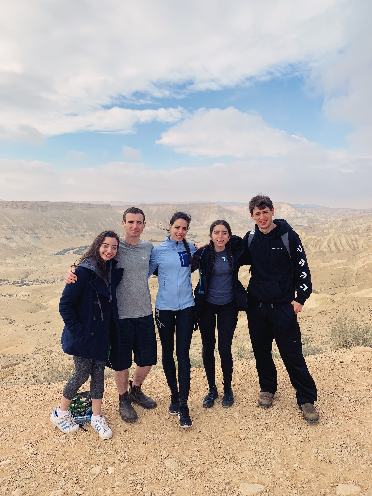

Our Love Story
A place to look back on all our memories together
Dec 2018-Jan 2019: Birthright
On the third day of Birthright, I met you. I was asking Chen, our tour guide, in Hebrew where should I store my valuable possessions. He replies and then you ask me, "wait, you know Hebrew?" and I ran away. Classic. Anyway, we got to talk about five minutes later and got to know a little more about each other. We had a pretty good rhythm, immediately started with the jokes which developed more and more throughout the trip.
By the time we reached the kibbutz in the Negev, boy I had a crush. You tried to help me dance in the Sylvester party, but I was too embarrassed and shy. I thought you were too cool for me. By the time New Years Eve came along, I wanted you to be my New Years kiss. I was a bit saddened that my dream didn't come to fruition, however still grateful to have you as a friend. The trip comes to an end in Jerusalem just a couple days later, and the people that extended their trip planned to meet up (this included me, and obviously you).
Fun fact: I believe this was our first real picture together. Look at that gap between us! We could fit Shaq in there. I really wanted to get a picture with you on Birthright, so I posted this picture on my Instagram despite it being a little awkward lol.
Jan 2019: A Spark Ignites
It was just after our extended-trip Birthright group meetup ended. You were going to drive me home, but as you promised on Birthright, you took me by your home in order to see the view from your balcony. A quick detour to see the view turned into an hours long conversation about personal details of our lives. I had to use the bathroom at some point and when I entered your room, I started making some sarcastic comment when-- you kissed me. I remember it as a cinematic moment. I couldn't believe it.
We saw each other the next day with our Birthright group once more. This time, every second someone was looking away, we were holding hands and giving each other secret kisses. By the end of the night, we all said goodbye since a majority of the group was leaving and I was about to go on an extended Birthright trip to Eilat with Eve.
In the two weeks we didn't see each other, we continued to text and even video chat. I saw you again on January 18th, the day of our first date. We had hot chocolate and desserts; what more could I ask for? You expressed to me that your feelings towards me have deepened and I felt the same way.
You planned to drop me off at the airport for my flight back to the US. You ask the important question lingering in the air: "so what happens now?" We agreed that we would keep in contact, text each other every now and then, and see how things go when I would travel back to Israel in June for my cousin's wedding.

April 2019: Official to the World
So that agreement that we had? Well, it didn't exactly turn out that way... By April we had made it official that we were in a relationship, video chatted for countless hours and had well over ten thousand WhatsApp messages exchanged between us. Oh, and did I mention that you booked a flight to New York City and stayed with me for 16 days?
This trip was formative for us. It tested what it was like for us to be together for an extended duration of time, and it was so fun! Eve and I introduced you to a lot of delicious food, we saw two soccer games, and saw KSHMR in concert together.
During this trip, we also became official to the world. I posted you on my Instagram, which finally let everyone know that we are together. And DAMN we are cute.
Oh, and how could I forget? We met Brunelle, King of the Universe and our hearts.
June 2019: Meeting the Families
This time, when I went to Israel, I stayed with your family. I got to bond with your mom, dad, and sister. Of course I was shy at the beginning, but it was such a positive experience. I felt like I got to be a part of your routine and deepen my emotional connection to you even more.
During this stay, you also met a large portion of my mother's side of the family since you escorted me to my cousin's wedding! To eat appetizers with you, hear the Champion's League anthem as my cousin walked down the isle, and dance with you was truly a highlight of that trip. Seeing you wear all of those dumb balloon hats is forever etched in my brain.
Also, let's not forget all the fun things we did together! We went to an escape room with some people from your unit, you taught me how to play pool, we ate yummy hummus as the sun set over the sea, and scootered together all the way to Namal TLV and back.

Sep 2019: Living Together
I stayed with you in Israel for almost a full month. During this time, you met my dad, my sister Dafna, her boyfriend Gil, and my oldest friend Daria. This was a big step! Best part is that you won over all of their hearts, as you did mine.
On the other side of the equation, I got to meet your grandparents (multiple times!), was invited to your sister's birthday brunch, and I got to meet some more people from your unit because we took part in a shakshuka coookoff!
A lot happened this month. However, I think my favorite moment with you was going to the beach and swimming together. It was so peaceful; the water was the perfect temperature, and we made the most fun out of it as we always do. Meeting up with Carmel was a semi-close second though.

Sep 2019-Oct 2019: Our First Trip
We went on a month-long trip together to South Korea and Japan. That's crazy! It was another real test of our relationship. However, we passed the test with flying colors. Yes, squabbles occurred here and there, but it's expected on such a high-intesity trip. In the end, I'm so happy that I was able to travel with you. I really feel like we made the most of our time (despite you getting sick for the last week or so).
South Korea in my mind was perfect. We went to all of the cool stores and fell in love with all the cutesy plushies. You had your first encounters with east Asian claw machines and we went to a pretty awesome arcade. We were entranced by all the shiny coming from all directions in Hongdae and Myeong-dong. We tried very yummy street food, which got you sick but not me, mwhahaha. We saw the important cultural sites. We went out in Hongdae literally until the sun rose and it was soo awesome (we pole danced, can that really be topped?). We went to two very unique animal cafes: a sheep cafe and a raccoon/corgi/pig cafe. They were AWESOME. Last but not least, we saw 360 views of Seoul from the N Tower. It was only then that we truly realized how huge Seoul was. It was amazing to walk around the observatory with you. Also, we finally found Korean food that I could actually eat! It was very amusing to observe you attempting to eat a very spicy noodle soup.
Japan is harder to account in such detail since we stayed there so much longer, but I'm so happy I went with you and not someone else. Most people would probably want to go to literally every temple in every city. We would die if we did that. Instead, we went to almost every Pokemon center in every city that had one. We went on a Mario Kart tour through Tokyo. These are truly the highlights of my trip. Let's not forget the time you gamed the claw machines in Osaka, the time that you serenaded me with Careless Whisper in karaoke, the time you tried the sweet potato frappucino in Starbucks, and how much you freaked the fuck out when you saw all of the shiny in Shinjuku. Harajuku was also super fun. We went to the Kawaii Monster Cafe (which was SO FUCKING AWESOME), had a GIANT cotton candy, ate all of those Calbee veggie fries, ate those fancy crepes, had the bear ice cream (which was so cute!!), ate the fluffy pancakes, and of course, made fun of all the crazy clothing you can find in the Laforet mall. Oh, and we went to a Shiba Inu cafe!


Oct 2019: Surviving our First Hurricane
Did I forget to mention that we survived our first hurricane together? Of course, in the 3 week period that we decide to go to Japan they decided to have the worst typhoon in sixty fucking years. Also, we happened to be stuck in one of the more boring cities that we found ourselves in (Kanazawa has NO PLACES TO BUY POKEMON CARDS). Lovely. Thankfully, we were northwest of where the storm was going to really hit, but still it was an invigorating experience. I remember the day the storm was going to hit we went to our favorite "build your own sushi" restaurant (COIL is delicious) and it started pouring rain like crazy. Let's also not forget that we almost died of starvation that night due to the fact that there was no room service in our hotel due to "a private event." Thank god that Japanese guy literally drove through a hurricane to deliver us pizza right before they closed.
The hurricane had quite a beautiful effect though. The day before the storm, we experienced probably the craziest and most beautiful sunset ever.
Dec 2019-Jan 2020: Florida
You came to visit me in Florida this winter. You saw the homes I grew up in, had Friday night dinners with my aunt and uncle, and I showed you all of my favorite spots growing up. You also got to experience Christmas outside of Israel for the first time! You were so excited to see all of the Christmas decorations and lights; it was very cute.
We went to the pool many times, went shopping, explored Miami, saw swamp nature reserves, and ate a lot of yummy food. Our top food spots were definitely Burgerfi, Tarantella's (my favorite Italian restaurant), and Sugar Factory.
We also got to spend New Years Eve together as a couple for the first time. Pitbull helped us bring in the new year with a free concert (we were so close to him!), and you finally kissed me like you should've last year.
This was truly a relaxing trip, and I'm so happy that you were able to see where I called home for ten years ❤
Dec 2019: Our First Basketball Game
During the Florida trip, you took me to my first basketball game. I remember how guilty you felt that I was purchasing $150 tickets to see a professional game of a sport I didn't really care for. In the end, I was the one screaming louder than you and we experienced probably the craziest NBA game of the season. Our heart rates spiked and we were so happy to see the Heat win such a close game. The experience was so good that we went to go see another game, and I was the one to initiate the process.

{kind=link}
{kind=link}
{kind=link}
{kind=link}
{kind=link}
{kind=link}
{kind=link}
{kind=link}
{kind=link}
{kind=link}
{kind=link}
{kind=link}
{kind=link}
Jan 2019-∞: Looking Forward to the Future
Thank you for everything, Nuli. I know these past few months have been stressful due to the job search, but keep your eye on the prize. I can't wait to live with you one day and to just have the most fun together. I can't wait until we travel again to some crazy destinations. I can't wait until we go visit another Pokemon Center. I can't wait for us to visit Eve again in New York. I can't wait for us to go see Brunelle again together.
I can't wait to give you a huuuuge hug the next time I see you. I'm looking forward to viewing the sunset with you over Seattle once again. Seattle misses you dearly ❤